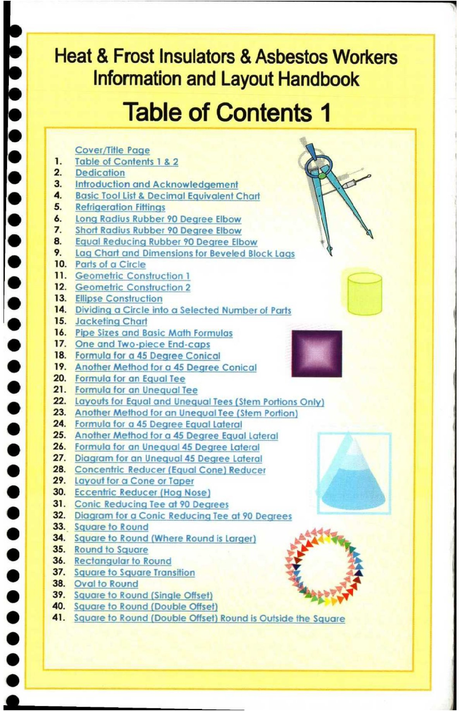
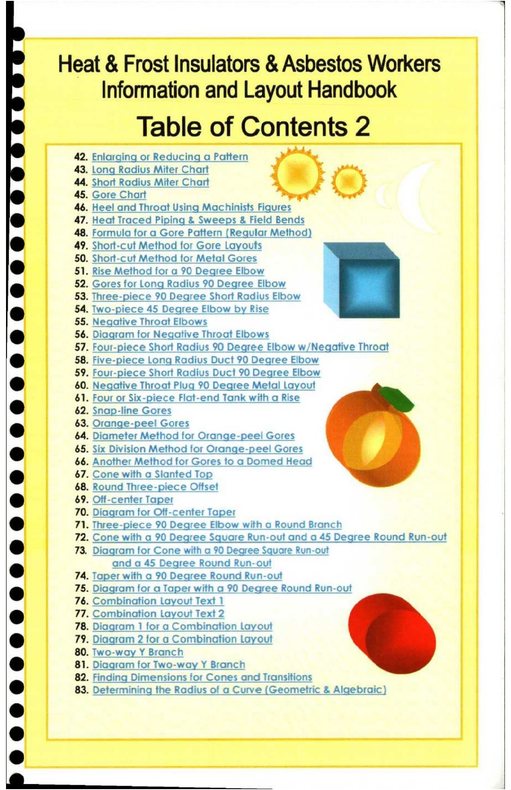

1. Table of Contents 1 & 2

Sei ee ee eee — ae ee
Heat & Frost Insulators & Asbestos Workers
Information and Layout Handbook
Table of Contents 1
Cover/Title Page .
eo 1. Table of Contents 1&2 Lo.
e 2. Dedication “et Ne =
3. Introduction and Acknowledgement | rS ee
e 4. Basic Tool List & Decimal Equivalent Chart a }
5. Refrigeration Fittings a
[ 6. Long Radius Rubber 90 Degree Elbow i
7. Short Radius Rubber 90 Degree Elbow ‘\
e 8. Equal Reducing Rubber 90 Degree Elbow *)
9. Lag Chart and Dimensions for Beveled Block Lags
e 10. Parts of a Circle
11. Geometric Construction 1
& 12. Geometric Construction 2
@ 13. Ellipse Construction
14. Dividing a Circle into a Selected Number of Parts {
& 15. Jacketing Chart
16. Pipe Sizes and Basic Math Formulas
e 17. One and Two-piece End-caps
18. Formula for a 45 Degree Conical
@ 19. Another Method for a 45 Degree Conical
20. Formuia for an Equal Tee
6 21. Formula for an Unequal Tee
22. Layouts for Equal and Unequal Tees (Stem Portions Only)
@ 23. Another Method for an Unequal Tee (Stem Portion)
e 24. Formula for a 45 Degree Equal Lateral
25. Another Method for a 45 Degree Equal Lateral *
& 26. Formula for an Unequal 45 Degree Lateral
27. Diagram for an Unequal 45 Degree Lateral
e@ 28. Concentric Reducer (Equal Cone) Reducer
29. Layout for a Cone or Taper
e@ 30. Eccentric Reducer (Hog Nose) a
31. Conic Reducing Tee at 90 Degrees
® 32. Diagram for a Conic Reducing Tee at 90 Degrees
33.. Square to Round adda.
e 34. Square to Round (Where Round is Larger) Po) ¥
) 35. Round to Square a
36. Rectangular to Round b rs
® 37. Square to Square Transition d ]
38. Oval to Round =
@ 39. Square to Round (Single Offset) pry
40. Square to Round (Double Offset)
@ 41. Square to Round (Double Offset) Round is Outside the Square
*
6
e

Heat & Frost Insulators & Asbestos Workers
Information and Layout Handbook
Table of Contents 2
42. Enlarging or Reducing a Pattern we ~
43. Long Radius Miter Chart q FF nt
44. Short Radius Miter Chart 4 e { k
45. Gore Chart ee nal
46. Heel and Throat Using Machinists Figures
e 47. Heat Traced Piping & Sweeps & Field Bends
48. Formula for a Gore Pattern (Regular Method)
@ 49. Short-cut Method for Gore Layouts
50. Short-cut Method for Metal Gores
@ 51. Rise Method for a 90 Degree Elbow
®@ 52. Gores for Long Radius 90 Degree Elbow
53. Three-piece 90 Degree Short Radius Elbow
& 54. Two-piece 45 Degree Elbow by Rise
55. Negative Throat Elbows
a 56. Diagram for Negative Throat Elbows
57. Four-piece Short Radius 90 Degree Elbow w/Negative Throat
t } 58. Five-piece Long Radius Duct 90 Degree Elbow
59. Four-piece Short Radius Duct 90 Degree Elbow
& 60. Negative Throat Plug 90 Dearee Metal Layout
61. Four or Six-piece Flat-end Tank with a Rise
@ 62. Snap-line Gores
e 63. Orange-peel Gores
64. Diameter Method for Orange-peel Gores
e@ 65. Six Division Method for Orange-peel Gores
66. Another Method for Gores to a Domed Head
e@ $7. Cone with a Slanted Top
68. Round Three-piece Offset
e 69. Off-center Taper
70. Diagram for Off-center Taper
®& 71. Three-piece 90 Degree Elbow with a Round Branch
72. Cone with a 90 Degree Square Run-out and a 45 Degree Round Run-out
& 73. Diagram for Cone with a 90 Degree Square Run-out
* and a 45 Degree Round Run-out
74. Taper with a 90 Degree Round Run-out
®@ 75. Diagram for a Taper with a 90 Degree Round Run-out
76. Combination Layout Text 1
[ } 77, Combination Layout Text 2
78. Diagram 1 for a Combination Layout
e@ 79. Diagram 2 for a Combination Layout
80. Two-way Y Branch
® 81. Diagram for Two-way Y Branch
82. Finding Dimensions for Cones and Transitions
® 83. Determining the Radius of a Curve (Geometric & Algebraic)
@
@
®